1방향 전환
빠지는 것
- 담당자 배정, 내 작업함, 제출·검수·승인
- "나는 누구?" 사용자 전환
- 파일 업로드와 데이터 저장 (Supabase 불필요)
새로 하는 것
- 세계관, 캐릭터, 스토리, 장소를 보여주는 포트폴리오 사이트
- 뒤집기 카드, 가로 타임라인, 시대별 필터 같은 디자인 요소
- 이전 기획(제작 과정)은 "제작 노트" 페이지의 읽을거리로 재활용
2세계관
현실 · 2026년
지금의 대한민국, 아파트에 사는 평범한 가족. 밥상, 이불, 공책 같은 오늘의 일상 속에서 부모님이 역사 이야기를 꺼냅니다.
상상 · 그 이야기의 시대
아이는 이야기 속 시대로 넘어가, 그 시대의 아이가 되어 역사 인물을 직접 만납니다. 에피소드마다 시대가 바뀝니다.
한 편의 흐름
예) 저녁 밥상에서 마늘을 먹다가 아빠가 단군 이야기를 꺼냄 → 아이 손의 마늘 한 쪽이 이야기 속으로 빨려 들어감 → 곰이 마늘을 먹는 동굴에서 눈을 뜸
3사이트 구조
상단 메뉴로 6개 페이지를 오갑니다. 캐릭터 카드, 에피소드 카드, 장소 카드는 서로 링크로 이어집니다 (예: 세종대왕 카드 → 한글 에피소드 → 집현전 장소).
4페이지별 구성
메인 · 극장 입구
첫 화면 한 장에 이 작품의 핵심인 현실에서 상상으로 넘어가는 순간을 담습니다. 스크롤을 내리면 남색 현실 화면이 호박색 상상 화면으로 바뀌고, 그 아래로 대표 캐릭터·최신 에피소드·시대 타임라인 맛보기가 이어집니다.
누가 만들었어?"
집현전 한가운데에 서 있었다
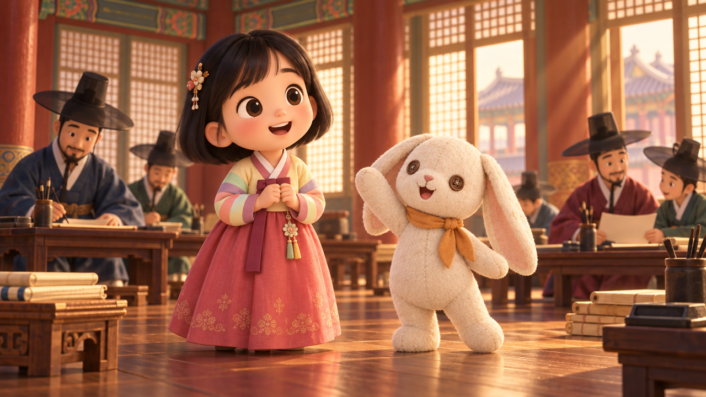
세계관
2장의 "한 편의 흐름"을 큰 그림으로 풀어 보여주는 페이지. 매개체 물건으로 넘어가는 전환 규칙, 상상 세계의 규칙(아이는 그 시대에서 어떤 존재인지, 어떻게 돌아오는지)을 소개합니다.
캐릭터
고정 가족과 역사 인물을 카드로 나열합니다. 고정 가족 카드는 눌러서 뒤집으면 상상 속 모습이 나옵니다. 카드를 열면 상세 소개로 이동합니다 (5장 항목).
스토리
고조선부터 조선까지 에피소드 5편이 가로로 흐르는 타임라인. 위의 시대 버튼으로 걸러 볼 수 있습니다. 에피소드 카드를 누르면 상세 페이지로 갑니다.
에피소드 상세 페이지에 들어갈 것
대표 장면
현실 장면 한 장 + 상상 장면 한 장을 나란히
줄거리
매개체 물건 → 상상 속 사건 → 다시 현실
등장인물
캐릭터 카드로 연결
오늘의 교훈
아이가 가져갈 한 문장
역사 한 스푼
실제 역사 사실 3가지와 출처
부모님과 나눌 질문
보고 나서 아이와 이야기할 질문 2~3개
장소
현실 공간과, 그곳에서 이어지는 상상 공간을 짝으로 보여줍니다.
제작 노트
기획 의도
왜 5~7세에게 역사를, 왜 상상이라는 형식으로
스타일 가이드
색상 규칙, 그림체, 글꼴, 캐릭터 비율
제작 과정
컨셉 → 리서치 → 시나리오 → 콘티 → 영상까지 12단계 소개 (이전 기획 재활용)
5캐릭터 설계
캐릭터 상세 페이지 항목
| 항목 | 고정 가족 | 역사 인물 |
|---|---|---|
| 그림 | 2026년 모습 + 상상 속 모습 (뒤집기) | 그 시대 모습 1장 |
| 기본 정보 | 이름, 나이, 2026년의 직업·학교 | 이름, 시대, 실제로 한 일 |
| 성격 | 키워드 3개 | 키워드 3개 (아이 눈높이로) |
| 말버릇·대표 대사 | 한 줄 | 작품 속 대사 한 줄 |
| 좋아하는 것 / 무서워하는 것 | 있음 | 선택 |
| 2026년의 배경 | 사는 곳, 하루 일과, 가족과의 관계 | — |
| 상상 속 역할 | 시대별로 어떤 모습이 되는지 | 아이와 어떻게 만나는지 |
| 등장 에피소드 | 전체 | 해당 에피소드 링크 |
| 진짜 역사 한 줄 | — | 실제 기록에 남은 사실 |
그림 기준
모든 그림은 아래 기준 그림을 참고 그림으로 연결해 만들어, 캐릭터 모습이 매번 같게 유지되도록 합니다.


| 규칙 | 내용 |
|---|---|
| 그림체 | 간단한 3D 애니메이션풍. 큰 머리, 크고 둥근 눈, 매끈한 표면. 실사 아님 |
| 캐릭터 카드 | 가로 4 : 세로 5. 전신, 밝은 단색 배경 |
| 장면·장소 | 가로 16 : 세로 9 |
| 상상 속 카드 | 장면 그림에서 인물을 카드 비율로 잘라 써서 따로 만들지 않음 |
| 후보 수 | 요청 한 번에 2장 |
| 파일 위치 | images/girl, images/rabbit, images/scenes … |
앞으로 만들 그림
| 그림 | 비율 | 상태 |
|---|---|---|
| 아이 · 2026 / 토끼 인형 | 4:5 | 완료 |
| 집현전 장면 (아이·토끼 상상 모습 포함) | 16:9 | 완료 |
| 엄마 · 2026, 아빠 · 2026 / 장면 속 부모님 변신 (주몽·문익점·장영실) | 4:5 · 16:9 | 완료 |
| 나머지 시대 장면 4개 (곰의 동굴, 동부여 궁궐, 목화밭, 경복궁 해시계) · 아이·토끼 포함 | 16:9 | 완료 |
| 역사 인물 (단군, 웅녀, 주몽, 세종 새로 만듦 · 유화, 문익점, 장영실은 부모님 변신 장면에서 잘라 씀) | 4:5 | 완료 |
| 2026년 아파트 장소 (밥상, 부엌, 아이 방, 거실 책상, 거실 벽시계) · 아이·이야기꾼 부모님·토끼 인형 포함 | 16:9 | 완료 |
캐릭터 목록 (초안)
고정 가족
- 아이 (주인공, 5~7세 여자아이) · 상상 속에서 그 시대 옷차림으로
- 엄마 · 아빠 · 에피소드마다 번갈아 이야기꾼, 상상 속에서 함께 변신
- 토끼 인형 · 아이의 애착 인형. 상상 속에서는 살아 움직이는 길잡이
역사 인물 (에피소드 5편 기준)
- 단군, 웅녀 · 고조선
- 주몽, 유화 부인 · 고구려 (유화 부인 = 엄마가 변신)
- 문익점 · 고려 (아빠가 변신)
- 세종대왕, 집현전 학자 · 조선
- 장영실 · 조선 (아빠가 변신)
역사 인물 카드


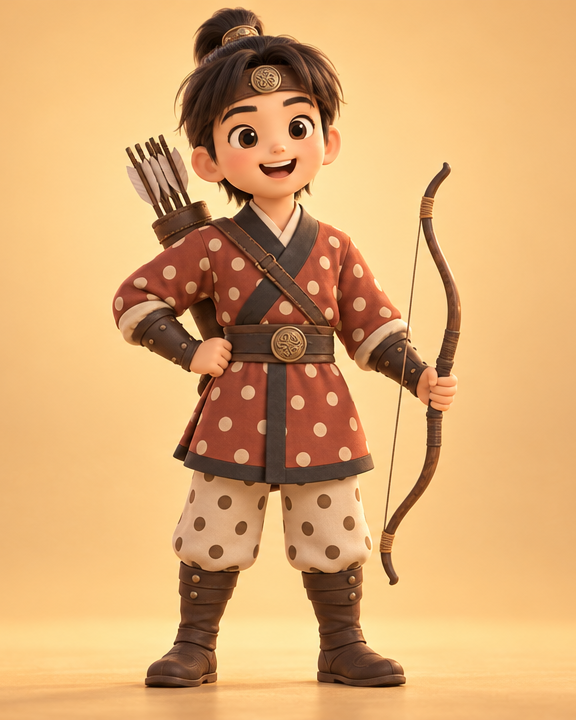
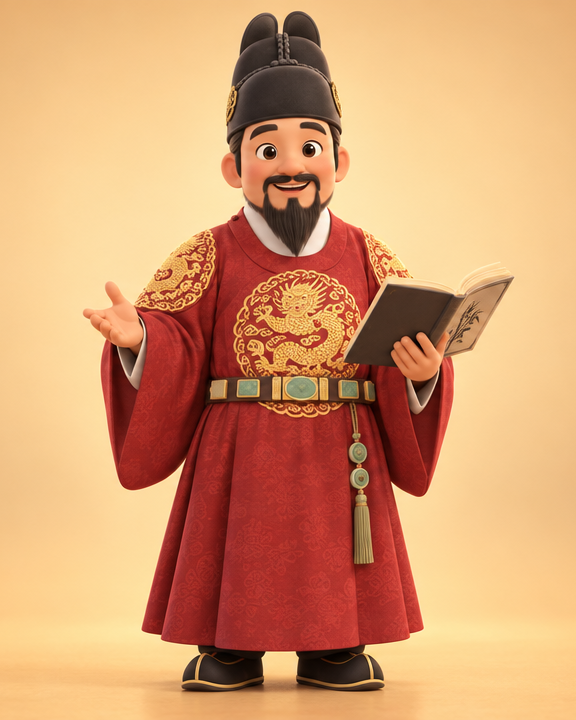
6스토리 목록 (5편)
옛날부터 전해 내려오는 이야기 중 아이들이 가장 많이 듣는 다섯 편을 골랐습니다. 전쟁·분단 같은 무거운 주제는 다루지 않습니다.
| 시대 | 에피소드 (가제) | 매개체 물건 | 2026년 장면 | 상상 속 장소 | 역사 인물 |
|---|---|---|---|---|---|
| 고조선 | 단군 할아버지와 마늘 | 마늘 | 저녁 밥상, 마늘을 먹다가 아빠가 이야기 | 곰과 호랑이의 동굴 | 단군, 웅녀 |
| 고구려 | 알에서 태어난 주몽 | 달걀 | 아침 부엌, 달걀 프라이를 하며 엄마가 이야기 | 동부여 궁궐 | 주몽, 유화 부인 |
| 고려 | 문익점과 목화씨 | 솜이불 | 추운 겨울밤, 이불을 덮어 주며 아빠가 이야기 | 하얗게 핀 목화밭 | 문익점 |
| 조선 | 세종대왕과 한글 | 받아쓰기 공책 | 거실 책상, 받아쓰기 숙제를 보던 엄마가 이야기 | 경복궁 집현전 | 세종, 집현전 학자 |
| 조선 | 장영실과 해시계 | 거실 벽시계 | "몇 시야?" 묻는 아이에게 아빠가 이야기 | 경복궁 앞 해시계 | 장영실, 세종 |
※ 이야기꾼은 아빠·엄마가 번갈아 맡습니다. 세계사 에피소드는 다음 단계에서 다룹니다.
에피소드 상상 장면 (후보 2장씩)
아이·토끼 기준 그림과 집현전 장면을 참고 그림으로 연결해 만들었습니다. 곁에 인물이 있는 장면은 그 인물을 부모님으로 바꿨습니다 (주몽 = 엄마, 문익점·장영실 = 아빠). 왼쪽이 후보 1, 오른쪽이 후보 2이고, 타임라인 미리보기에는 후보 1을 넣었습니다.

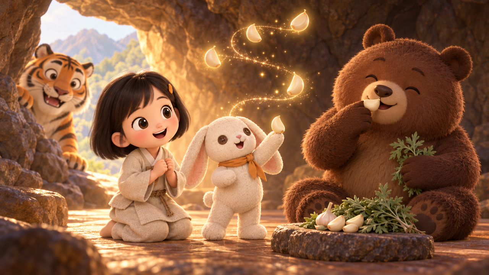
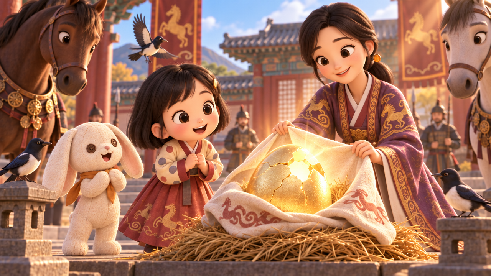
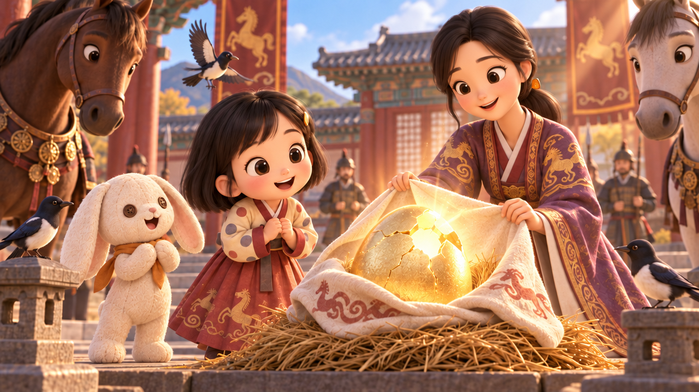
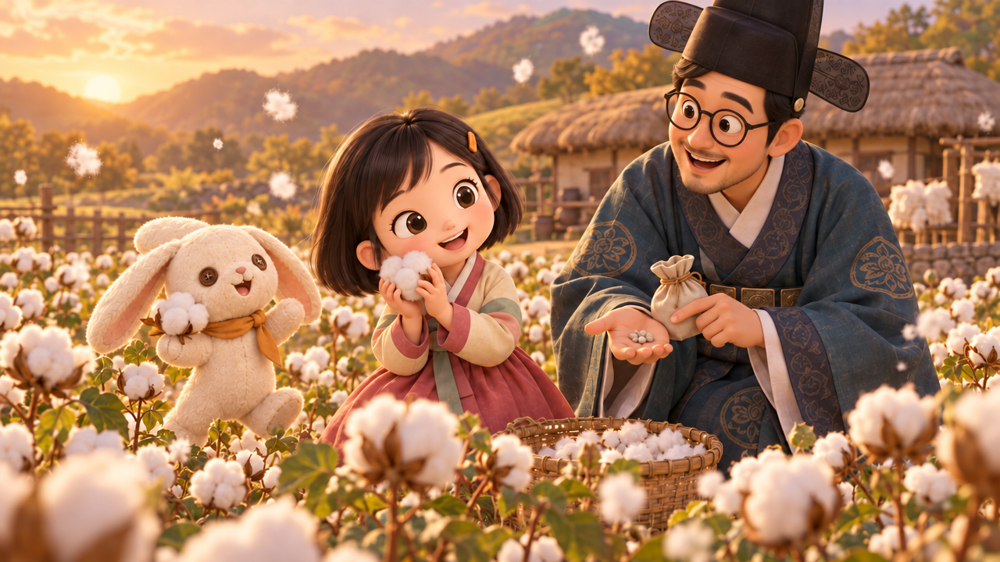
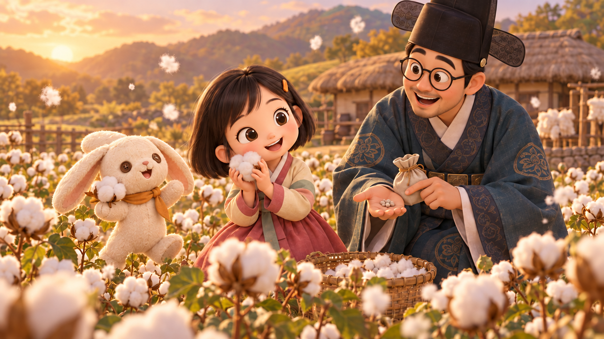
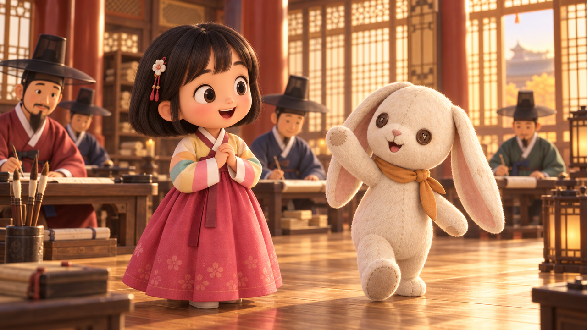
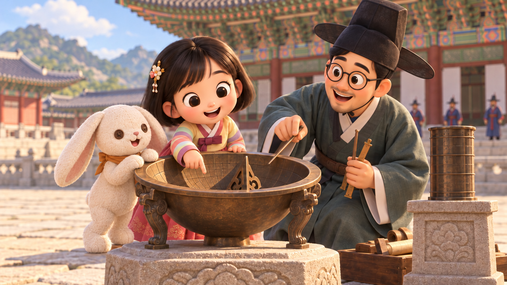
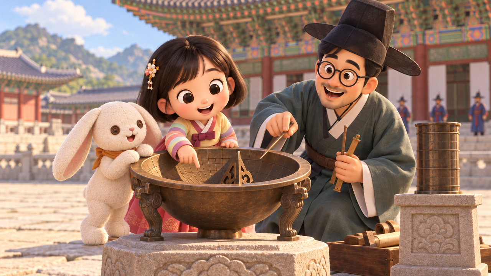
※ 단군·세종대왕 장면은 아이 곁에 다른 인물이 없어 그대로 두었습니다.
7디자인 요소
| 요소 | 쓰는 곳 | 설명 |
|---|---|---|
| 현실 → 상상 전환 스크롤 | 메인 | 스크롤하면 남색 화면이 비스듬히 호박색으로 덮이며 시대가 바뀜 |
| 매개체 물건 전환 | 메인, 에피소드 상세 | 물건(마늘, 달걀 등)을 누르면 화면이 그 물건 속으로 천천히 빨려 들어가며 상상 장면이 열림 |
| 뒤집기 카드 | 캐릭터, 장소 | 누르거나 키보드로 선택하면 상상 속 모습으로 뒤집힘 |
| 가로 타임라인 | 스토리, 메인 맛보기 | 시대 순서대로 옆으로 밀어서 보기. 시대 경계에 연도 표시 |
| 시대별 필터 | 스토리, 캐릭터, 장소 | 시대 버튼으로 해당 시대만 보기 |
| 나란히 비교 | 장소, 에피소드 상세 | 2026년 장면과 상상 장면을 좌우로 배치 |
| 스크롤 등장 효과 | 전체 | 카드가 화면에 들어올 때 살짝 떠오름. "움직임 줄이기" 설정을 켠 사람에게는 끔 |
각 요소가 어떻게 동작하는지는 기능정의서에 자세히 정리했습니다.
참고 사이트
Red Fedora Books redfedorabooks.com
- 양쪽 대비: 화면이 양쪽으로 나뉘어 몽롱하게 비교되는 느낌이 좋음 → 메인의 현실·상상 두 화면, 장소의 나란히 비교에 참고
- 효과 위의 사진: 흐릿한 효과 위에 사진을 얹어 현실과 다른 상상이라는 느낌이 남 → 상상 장면 그림을 효과 위에 올려 쓰기
- 빨려 들어가는 전환: 모자를 누르면 빨려 들어가듯 다음 페이지로 넘어가는 표현이 좋음 → 매개체 물건을 누르면 그 시대로 빨려 들어가는 전환에 사용
8색상 규칙
이 기획서 전체가 사이트 색 그대로 칠해져 있습니다. 검정·흰색에 두 가지 색만 더합니다.
#2B3A67 · 연한 #E7EAF3현실 장면, 메뉴, 제목 선, 버튼
#E8833A · 글자용 #A8501A · 연한 #FCEBDD상상 장면, 카드 뒷면, 시대 썸네일
#111111 · 보조 #6B6B6B · 선 #E5E5E5본문 글자, 설명, 구분선
#FFFFFF · 면 #F5F5F5배경, 카드 앞면, 미정 칸
- 호박색 위에는 검정 글자만 씁니다 (흰 글자는 대비 2.7:1로 읽기 어려움).
- 흰 바탕 위 호박색 글자는 진한 호박색
#A8501A를 씁니다 (5.5:1). - 그림(일러스트) 속 색은 이 규칙에서 제외합니다. 규칙은 사이트의 틀(바탕, 글자, 버튼, 카드)에만 적용합니다.
9만드는 방법
정적 사이트
HTML·CSS·JavaScript만 사용. 서버와 데이터베이스 없음
GitHub Pages
저장소에 올리면 바로 링크로 공개. 선생님은 링크로 확인
콘텐츠 목록 파일
캐릭터·에피소드·장소를 목록 파일 하나에 적고 페이지가 그걸 읽어 카드로 그림. 캐릭터를 추가할 때 목록에 한 줄만 더하면 됨
동영상 테스트 (ElevenLabs)
그림 한 장을 첫 장면으로 넣으면 그 그림이 움직이는 짧은 영상을 만들 수 있습니다. 모델마다 값과 길이가 크게 다릅니다.
| 모델 | 5초 1편 크레딧 (예상) | 최대 길이 | 화질 | 소리 |
|---|---|---|---|---|
| Seedance 2.5 (기본 추천) | 약 14,000 | 30초 | 480p · 720p · 1080p | 있음 |
| Seedance 2 Fast | 약 7,300 | — | — | 있음 |
| Kling 3 Pro | 약 5,100 | 15초 | 1080p · 4K | 있음 |
| Kling 2.5 Turbo (이번 테스트) | 약 2,100 | 10초 (5초·10초만) | — | 없음 |
| LTX 2 Fast (빠른 초안용) | 약 1,450 (기본 6초) | 20초 | 1080p · 2K · 4K | 있음 |
※ 비교용: 그림 1장은 약 430~920 크레딧. 영상 5초 1편이 그림 3~30장 값입니다. 길이를 늘리면 크레딧도 거의 비례해서 늘어납니다.
10정해야 할 것
확정된 것
- 아이: 시청자와 같은 5~7세 또래 여자아이
- 부모님: 엄마·아빠 둘 다. 에피소드마다 이야기해 주는 사람이 바뀜
- 고정 캐릭터 추가: 아이의 애착 인형인 토끼 인형
- 상상 속 아이: 그 시대 옷차림과 역할로 바뀜
- 상상 속 부모님: 함께 그 시대 인물로 변신
- 장면 전환: 매개체 물건이 이야기 속 세계로 들어가면서 상상이 시작됨
- 그림: AI 이미지 도구로 제작. 간단한 3D 애니메이션풍 (실사 아님)
- 상상 속 토끼 인형: 살아 움직이는 귀여운 길잡이 캐릭터
- 가족이 사는 곳: 아파트
- 에피소드: 5편 (단군, 주몽, 문익점, 세종대왕, 장영실). 무거운 주제 없이 옛날부터 전해 오는 이야기
- 세계사: 다음 단계에서
- 사이트 이름: 상상극장
캐릭터
- 아이의 이름
- 단군·세종대왕 편에서 부모님의 역할주몽(엄마=유화 부인), 문익점·장영실(아빠)은 정함. 장면에 곁의 인물이 없는 두 편은 아직 미정
스토리
- 6장 에피소드 5편 확인 · 바꾸고 싶은 이야기가 있는지